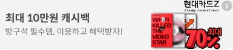

- 내가 쓴 글
- 댓글 단 글
- 스크랩
- HOT 게시판
- BEST 게시판
- 자유게시판
- 비밀게시판
- 졸업생게시판
- 시사·이슈
- 새내기게시판
- 장터게시판
- 정보게시판
- 취업·진로
- 고시 준비
- 로스쿨 진학 준비 게시판
- 약대/피트 준비 게시판
- 건대신문
- 동아리 연합회
- 영자신문사 불레틴
- 교지편집위원회
- 건국대학교 학원방송국 ABS
- 예술디자인대학 학생회
- 끝말잇기
- 헬스 게시판
- 숫자쌓기게시판!
- 레츠고 교환학생
- Queer
- 애니 게시판
- 편입생게시판
- 성향 게시판
- 고양이게시판
- 욕게시판
- 메이플스토리
- 고닉친목게
- 연예인 게시판
- 주식
- 케시판
- 맛집게시판
- 릴레이 소설
- 연극뮤지컬
- 야구게시판
- 롤하는 사람들~~